PC 125 Introduction to Educational Research
Research as disciplined inquiry: designs, problems, questions, sampling, tools, analysis, referencing and proposal writing
Contents
- Unit 1: Meaning, Importance and Characteristics of Research
- Unit 2: Educational Research Design
- Unit 3: Identification of the Research Problem
- Unit 4: Research Purpose, Research Questions and Hypotheses
- Unit 5: Sample and Sampling
- Unit 6: Tools for Data Collection
- Unit 7: Fundamentals of Data Analysis
- Unit 8: Referencing and Bibliography
- Unit 9: Writing a Research Proposal
- Exam Preparation Bank
- References
About this course
Educational research is the systematic, disciplined inquiry that produces trustworthy knowledge for improving teaching, learning and educational policy. This course introduces the meaning and process of research, the major quantitative, qualitative and combined (action and mixed methods) designs, the identification and statement of research problems, the writing of purpose statements, research questions and hypotheses, sampling, data collection tools and ethics, the fundamentals of quantitative and qualitative analysis, academic referencing and the avoidance of plagiarism, and the writing of a complete research proposal. The notes draw principally on Creswell, Gay, Mills and Airasian, Fraenkel and Wallen, Best and Kahn, Johnson and Christensen, Cohen, Manion and Morrison, and the APA Publication Manual (7th ed.).
Course objectives
Explain the concept, characteristics, purposes and process of educational research.
Distinguish and select among quantitative, qualitative, action and mixed methods designs.
Identify and justify a research problem and write purpose statements, research questions and hypotheses.
Select samples and data collection tools appropriately and ethically.
Describe the basics of quantitative and qualitative data analysis and interpretation.
Use APA referencing, avoid plagiarism and write a complete research proposal.
Each unit follows the official syllabus order. Read the narrative first, then the Key point boxes, then test yourself with the Exam focus questions.
Golden boxes = must-remember ideas. Teal boxes = definitions and study tips. Green boxes = Bangladesh context.
The final chapter is a question bank (MCQs with answers, short and broad questions) in the style of university examinations, followed by full references in APA 7th style.
Statistics on enrolment, budgets and policies change every year. Before an exam, check the latest BANBEIS, DPE, UGC and UNESCO figures.
Unit 1: Meaning, Importance and Characteristics of Research
1.1 Meaning of research and educational research
The word research comes from the French recherche, "to search again". In scholarly usage research is a systematic, controlled, empirical and critical investigation of propositions or questions, undertaken to discover new knowledge or to verify existing knowledge.
Research (Creswell, 2012): "Research is a process of steps used to collect and analyze information to increase our understanding of a topic or issue." It consists of three steps: pose a question, collect data to answer the question, and present an answer to the question.
Research (Kerlinger, 1986): "Scientific research is systematic, controlled, empirical, amoral, public and critical investigation of natural phenomena. It is guided by theory and hypotheses about the presumed relations among such phenomena."
Educational research (Best & Kahn, 2006): Educational research is "the systematic and objective analysis and recording of controlled observations that may lead to the development of generalizations, principles or theories, resulting in prediction and possibly ultimate control of events" in the field of education. It focuses on improving teaching, learning, schooling and policy.
Educational research therefore applies the methods of disciplined inquiry to educational questions: How do children learn to read? Does a new teacher-training programme improve classroom practice? Why do girls drop out of secondary school in a particular upazila? What do teachers believe about inclusive education?
1.2 Characteristics of educational research
| Characteristic | Explanation |
|---|---|
| Systematic | Follows a planned, orderly sequence of steps from problem to conclusion |
| Empirical | Based on observable evidence (data) rather than opinion or authority |
| Logical | Uses inductive and deductive reasoning; conclusions follow from evidence |
| Replicable / transparent | Procedures are described so others can repeat or audit the study |
| Objective / impartial | Minimises personal bias; in qualitative work, bias is acknowledged through reflexivity |
| Purposive | Directed at solving a problem or answering a clearly stated question |
| Critical and self-correcting | Findings are open to public scrutiny, peer review and revision |
| Cumulative | Builds on previous knowledge through the literature review and adds to it |
| Ethical | Protects participants' rights, consent, confidentiality and welfare |
| Interdisciplinary | Draws on psychology, sociology, philosophy, economics, statistics and other fields |
1.3 Purpose and importance of educational research
Research serves three broad purposes (Creswell, 2012): it adds to knowledge, improves practice, and informs policy debates.

Figure 1. Why educational research matters
Basic, applied, evaluation and action research are often distinguished by purpose:
| Type by purpose | Aim | Example |
|---|---|---|
| Basic (fundamental) research | Develop or test theory; knowledge for its own sake | Testing a theory of working memory in learning |
| Applied research | Solve a practical problem using theory | Effect of cooperative learning on Grade 7 mathematics achievement |
| Evaluation research | Judge the merit or worth of a programme | Evaluating a stipend programme for secondary girls |
| Action research | Practitioners improve their own practice in their own setting | A teacher improving students' class participation |
| Research and development (R&D) | Develop and field-test educational products | Developing and validating a digital science module |
In Bangladesh, research by NAEM, NCTB, BANBEIS, the Institute of Education and Research (IER, University of Dhaka) and other university departments, BRAC and CAMPE (Education Watch reports) has informed policies such as the National Education Policy 2010, the competency-based curriculum, stipend programmes and teacher professional development.
1.4 Search for knowledge: sources of knowing
Humans acquire knowledge in several ways. Research is the most reliable because it combines experience and reasoning in a systematic, self-correcting way.
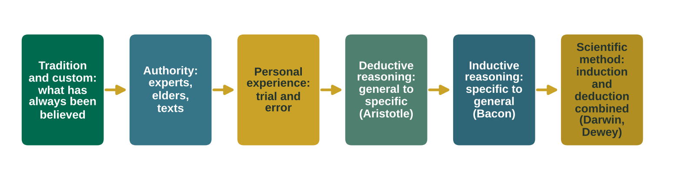
Figure 2. Sources of knowledge from the least to the most systematic
| Method | Process | Strength | Limitation |
|---|---|---|---|
| Experience | Learning from personal or shared experience | Practical, immediate | Limited, biased, unsystematic |
| Authority | Accepting knowledge from experts or texts | Efficient | Authorities may be wrong |
| Deductive reasoning | From a general premise to a specific conclusion (syllogism): all teachers need training; Rina is a teacher; therefore Rina needs training | Conclusions are certain if premises are true | Premises may be false; adds no new knowledge |
| Inductive reasoning | From specific observations to a general conclusion (Francis Bacon) | Generates new generalizations | Incomplete observation; conclusions are probable |
| Scientific method | Combines induction and deduction: observe, hypothesise, deduce consequences, test, conclude | Systematic, self-correcting | Not all educational questions are easily testable |
Dewey's steps of reflective thinking (the scientific method)
John Dewey (1910, How We Think) described five steps that underlie the scientific method: (1) a felt difficulty, (2) location and definition of the problem, (3) suggestion of possible solutions (hypotheses), (4) reasoning out the implications of the suggestions, and (5) testing the hypothesis by observation or experiment.
Research combines the what of induction (observations) with the why of deduction (theory). Quantitative research is often described as deductive (theory → hypothesis → data → confirmation), while qualitative research is largely inductive (data → codes → themes → theory).
1.5 Steps in the process of research
Creswell (2012) describes six steps common to both quantitative and qualitative research:
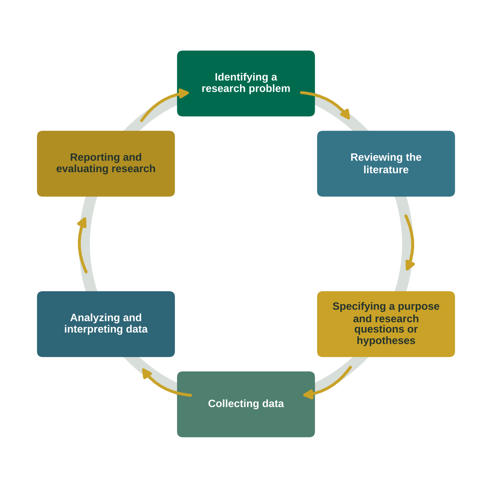
Figure 3. The research process (Creswell, 2012)
| Step | Quantitative emphasis | Qualitative emphasis |
|---|---|---|
| 1. Identify a problem | Description of trends or explanation of relationships among variables | Exploring a central phenomenon in depth |
| 2. Review the literature | Major role: justifies the problem and suggests questions and hypotheses | Minor role at the start: justifies the problem; used more at the end |
| 3. Purpose, questions, hypotheses | Specific, narrow, measurable, observable | General, broad, seeking participants' experiences |
| 4. Collect data | Instruments with preset questions; large numbers; random sampling | Emerging protocols; small numbers; purposeful sampling |
| 5. Analyse and interpret | Statistical analysis; compare with predictions and past research | Text and image analysis; themes; larger meaning |
| 6. Report and evaluate | Standard, fixed structure; objective and unbiased | Flexible, emerging structure; reflexive and biased |
1.6 Role of the literature review at each step
A literature review is a written summary of journal articles, books and other documents that describes the past and current state of information on a topic, organises it and documents the need for a proposed study (Creswell, 2012).
Identifying the problem: shows what is known, reveals gaps and helps narrow a broad topic.
Justifying the problem: provides evidence that the problem is important.
Purpose and questions: suggests variables, theories and hypotheses; in quantitative research theory guides the questions.
Methodology: shows designs, instruments and samples used by others; helps avoid known pitfalls; may provide validated instruments.
Analysis and interpretation: findings are compared with earlier studies to confirm, extend or challenge them.
Reporting: situates the contribution of the study in the field.
Steps in conducting a literature review
Identify key terms (keywords, descriptors).
Locate literature (ERIC, Google Scholar, Scopus, JSTOR, university libraries, BANBEIS reports).
Critically evaluate and select (relevance, quality, recency; primary vs secondary sources).
Organise the literature (literature map, notes, reference manager).
Write the review thematically, not as a list of summaries, ending with the gap your study fills.
Prefer primary sources (original research reported by the researcher) to secondary sources (summaries by others). Peer-reviewed journal articles carry more weight than newspapers or unreviewed websites.
Likely questions: "Define educational research and discuss its characteristics." "Distinguish between inductive and deductive reasoning with examples." "Describe the steps of the research process and the role of literature review in each."
Unit 2: Educational Research Design
2.1 Concept and classification of research design
A research design is the overall plan or strategy for answering research questions: it specifies what data will be collected, from whom, how, when and how they will be analysed. Creswell (2012) calls designs "the specific procedures involved in the research process: data collection, data analysis, and report writing". Kerlinger (1986) described design as "the plan and structure of investigation so conceived as to obtain answers to research questions and to control variance".
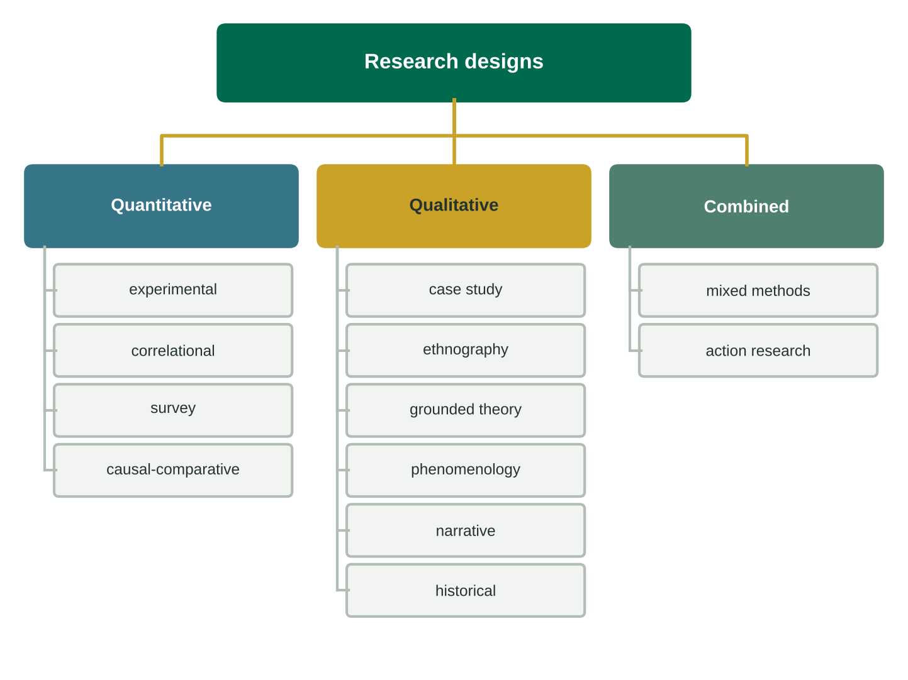
Figure 4. Classification of educational research designs (after Creswell, 2012)
Paradigms behind the designs
| Feature | Positivist / post-positivist (quantitative) | Interpretivist / constructivist (qualitative) | Pragmatist (mixed) |
|---|---|---|---|
| Ontology (nature of reality) | Single, objective reality | Multiple, socially constructed realities | Reality is what works in practice |
| Epistemology (knowledge) | Researcher independent, objective | Researcher interacts with participants | Both objective and subjective |
| Logic | Deductive, theory testing | Inductive, theory generating | Abductive, both |
| Data | Numbers | Words, images, observations | Both |
| Goal | Explain, predict, generalise | Understand, interpret meaning | Solve the problem |
2.2 Quantitative research designs
(a) Survey design
Survey research describes trends in the attitudes, opinions, behaviours or characteristics of a population by studying a sample (Creswell, 2012).
Types: cross-sectional (data collected at one point in time) and longitudinal (trend, cohort and panel studies over time).
Key characteristics: sampling from a population, questionnaires or structured interviews, high response rates, generalization.
Suitable problems: "What are secondary teachers' attitudes towards the new curriculum?" "How many hours do Grade 5 children spend on private tutoring?"
Steps: decide the survey is the best design → identify questions → identify population, frame and sample → determine design and procedure → develop or locate an instrument → administer → analyse → report.
Problems: low response rates, response bias, social desirability, poorly worded items.
(b) Experimental design
An experiment tests an idea (treatment) to determine whether it influences an outcome (dependent variable), with the researcher manipulating the independent variable and controlling other variables (Gay et al., 2012). It is the only design that can establish cause and effect firmly.
Key characteristics: random assignment, control over extraneous variables, manipulation of treatment conditions, outcome measures, group comparisons, threats to validity.
| Design | Notation (Campbell & Stanley, 1963) | Comment |
|---|---|---|
| One-shot case study (pre-experimental) | X O | No comparison; weakest |
| One-group pretest–posttest (pre-experimental) | O X O | No control group |
| Nonequivalent control group (quasi-experimental) | O X O / O – O | Intact classes; no random assignment |
| Pretest–posttest control group (true experiment) | R O X O / R O – O | Random assignment; strong |
| Posttest-only control group (true experiment) | R X O / R – O | Avoids pretest sensitisation |
| Solomon four-group (true experiment) | Four groups combining the above | Controls testing effects; needs many participants |
| Single-subject (A-B-A) | Baseline–treatment–baseline | Used in special education |
R = random assignment, X = treatment, O = observation or measurement.
Threats to internal validity (Campbell & Stanley, 1963): history, maturation, testing, instrumentation, statistical regression, selection, mortality (attrition), selection–maturation interaction, diffusion of treatment, compensatory rivalry. Threats to external validity: interaction of selection and treatment, of setting and treatment, of history and treatment, and the Hawthorne effect.

Figure 5. Pre-experimental, quasi-experimental and true experimental designs
(c) Causal-comparative (ex post facto) design
The researcher attempts to determine the cause of existing differences between groups, where the independent variable has already occurred and cannot be manipulated (e.g., gender, school type, attending pre-primary). Example: comparing the reading achievement of children who did and did not attend pre-primary school. Limitations: lack of randomization and control; cause–effect claims are tentative.
(d) Correlational design
Correlational research measures the degree of association between two or more variables using a correlation statistic, without manipulation (Creswell, 2012).
Explanatory design: explains how two variables co-vary (e.g., study time and GPA).
Prediction design: identifies predictor variables that forecast a criterion (e.g., SSC scores predicting HSC scores).
Correlation coefficients (Pearson r) range from −1 to +1. Correlation does not imply causation.
Distinguish clearly: correlational research studies one group and relationships among variables; causal-comparative research compares two or more groups on a dependent variable; experimental research manipulates the independent variable.
2.3 Qualitative research designs
Qualitative research explores a central phenomenon in its natural setting, uses the researcher as a key instrument, collects multiple forms of data, analyses inductively, and focuses on participants' meanings (Creswell, 2012; Denzin & Lincoln, 2011).
| Design | Focus | Typical data | Educational example |
|---|---|---|---|
| Case study (Stake, 1995; Yin, 2018) | In-depth exploration of a bounded system (a person, class, school, programme) | Interviews, observation, documents | How one rural school implemented inclusive education |
| Historical research | Systematic study of past events to understand the present | Primary sources (records, letters), secondary sources | Development of madrasah education in Bengal |
| Ethnography (Wolcott, LeCompte & Schensul) | Shared patterns of behaviour, beliefs and language of a culture-sharing group | Prolonged fieldwork, participant observation | Culture of a coaching centre |
| Grounded theory (Glaser & Strauss, 1967; Strauss & Corbin) | Generate a theory grounded in data that explains a process | Interviews; open, axial and selective coding | Theory of how first-year teachers cope with large classes |
| Phenomenology (Husserl; van Manen; Moustakas) | The essence of a lived experience shared by several people | In-depth interviews; bracketing | Lived experience of students with visual impairment in mainstream classes |
| Narrative research (Clandinin & Connelly, 2000) | Stories of individuals' lives told and re-storied chronologically | Life stories, journals, interviews | Life story of a woman who became a head teacher |
Historical research: criticism of sources
External criticism: establishes authenticity (Is the document genuine? Who wrote it, when?).
Internal criticism: establishes accuracy and credibility of the content (Is it true? Was the writer competent and unbiased?).
Trustworthiness in qualitative research
Lincoln and Guba (1985) proposed criteria parallel to quantitative validity and reliability: credibility (internal validity; via member checking, triangulation, prolonged engagement), transferability (external validity; via thick description), dependability (reliability; via audit trail) and confirmability (objectivity; via reflexivity).
Quantitative research asks how many, how much, what is the relationship, does X cause Y? Qualitative research asks what, how and why in the participants' own terms.
2.4 Combined designs
(a) Action research
Action research is systematic inquiry by practitioners (teachers, heads) into their own practice in order to improve it (Mills, 2011). Kurt Lewin (1946) coined the term; Stephen Corey (1953) introduced it into education; Kemmis and McTaggart developed the spiral model.
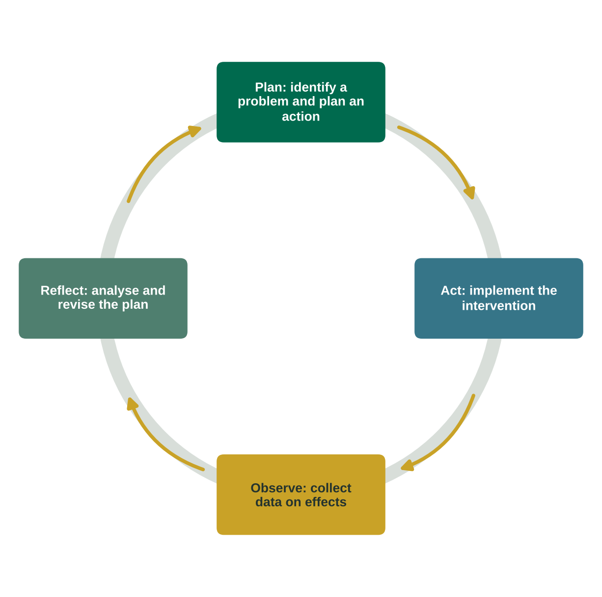
Figure 6. The action research spiral (Kemmis & McTaggart)
Types: practical action research (a teacher studying a local classroom problem) and participatory or critical action research (collaborative, emancipatory, aimed at social change).
Characteristics: practical focus, the teacher-researcher's own practice, collaboration, dynamic and cyclical process, a plan of action, sharing research.
Example: A teacher in a Dhaka secondary school finds that few girls speak in English class, introduces pair-work and think-pair-share, records participation for four weeks, reflects and revises.
(b) Mixed methods designs
Mixed methods research collects, analyses and integrates both quantitative and qualitative data in a single study or a series of studies, so that the combination provides a better understanding than either alone (Creswell & Plano Clark, 2018).
| Design | Sequence | Purpose | Notation |
|---|---|---|---|
| Convergent (parallel) | QUAN and QUAL at the same time | Compare or merge results; triangulate | QUAN + QUAL |
| Explanatory sequential | QUAN first, then QUAL | Qualitative data explain quantitative results | QUAN → qual |
| Exploratory sequential | QUAL first, then QUAN | Explore first, then build and test an instrument or generalize | QUAL → quan |
| Embedded | One form nested within the other | Secondary data support the primary design | QUAN(qual) |
Capital letters denote priority; the arrow means sequence; + means concurrent.
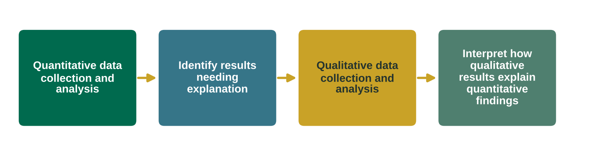
Figure 7. Explanatory sequential mixed methods design
Likely questions: "What is a research design? Classify research designs used in education." "Compare experimental and causal-comparative research." "Describe the characteristics and steps of action research." "What is mixed methods research? Explain its major designs."
Unit 3: Identification of the Research Problem
3.1 Concept of a research problem
A research problem is an educational issue, controversy or concern that a researcher studies (Creswell, 2012). It is a gap between what is and what should be, or a gap in knowledge, that needs investigation. It is different from the topic (broad subject area), the purpose (overall intent) and the research questions (specific questions to be answered).
")
Figure 8. From general to specific: narrowing the focus of a study (Creswell, 2012)
3.2 Importance of the research problem
It is the foundation of the whole study: design, sample, tools and analysis follow from it.
It justifies the use of resources and participants' time.
It defines the boundaries (scope) of the study.
A well-stated problem convinces readers, supervisors and funders that the study matters.
3.3 Characteristics of a good research problem
| Criterion | Question to ask |
|---|---|
| Researchable | Can data be collected to answer it? Is access to participants possible? |
| Significant | Does it add to knowledge, improve practice or inform policy? |
| Novel / original | Does it fill a gap, replicate, extend or give voice to unheard people? |
| Feasible | Are time, money, skills and resources sufficient? |
| Clear and specific | Are the key variables or phenomenon clearly defined? |
| Ethical | Can it be studied without harm to participants? |
| Interesting to the researcher | Will it sustain motivation throughout the study? |
3.4 Types and sources of research problems
Types: descriptive problems (what is), relational problems (how are variables related), causal problems (what causes what), exploratory problems (what is happening and why), evaluative problems (how well does a programme work).
Sources:
Personal teaching experience and classroom difficulties
Literature: "suggestions for future research" sections of articles and theses
Theories that need testing in new settings
Educational policies and reforms (e.g., implementation of the new curriculum)
Current issues and debates (learning loss after COVID-19, digital learning, climate education)
Replication of earlier studies
Discussions with experts, supervisors and colleagues
Reports of BANBEIS, NAEM, UNESCO, UNICEF, the World Bank and CAMPE
3.5 Variable and central phenomenon
In quantitative research the problem is expressed in terms of variables, characteristics that vary and can be measured (e.g., achievement, motivation, class size). In qualitative research the problem centres on a central phenomenon, the key concept, idea or process explored (e.g., teachers' experience of implementing inclusive education).
3.6 Justifying the research problem
Justification gives reasons why the problem is important (Creswell, 2012), using evidence from:
Other researchers and experts in the literature (e.g., "Several studies have called for…").
Personal or workplace experience (e.g., experiences as a teacher).
Statistics and documents (e.g., BANBEIS dropout rates, national assessment results).
Policy priorities (e.g., SDG 4, National Education Policy).
3.7 Statement of the problem: flow of ideas
Creswell (2012) proposes a five-part "deficiencies model" for writing the statement of the problem (introduction):
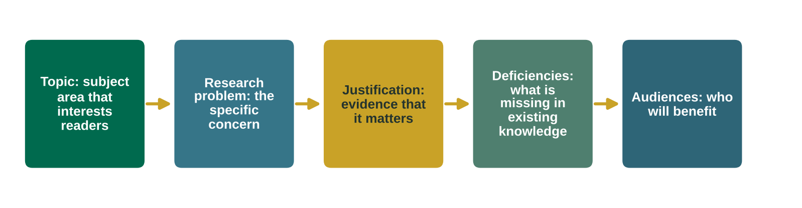
Figure 9. The five elements of a statement of the research problem
A good problem statement opens with a "narrative hook" (a striking statistic, quotation or question), moves from the general topic to the specific problem, cites evidence, identifies the gap, and ends by naming who will benefit.
Likely questions: "What is a research problem? State the characteristics of a good research problem." "Discuss the sources of research problems in education." "How would you justify a research problem? Give an example."
Unit 4: Research Purpose, Research Questions and Hypotheses
4.1 Concept and types of variables
A variable is a characteristic or attribute of an individual or an organisation that (a) researchers can measure or observe and (b) varies among the individuals or organisations studied (Creswell, 2012). A construct is an abstract attribute (e.g., self-efficacy) that must be operationally defined to become a measurable variable.
| Variable | Definition | Example (Effect of cooperative learning on achievement) |
|---|---|---|
| Independent (IV) | The presumed cause; manipulated or selected by the researcher | Teaching method (cooperative vs lecture) |
| Dependent (DV) | The presumed effect; the outcome measured | Mathematics achievement score |
| Intervening / mediating | Transmits the effect of IV to DV; explains how | Student engagement |
| Moderating | Changes the strength or direction of the IV–DV relationship | Gender, prior achievement |
| Control | Held constant or statistically controlled | Class size, teacher experience |
| Confounding / extraneous | Uncontrolled variable that may distort results | Private tutoring |
| Categorical vs continuous | Groups (gender) vs scores along a continuum (marks) |
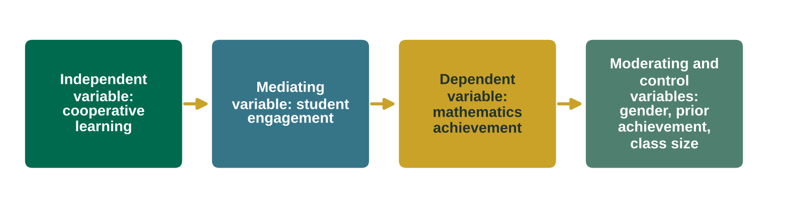
Figure 10. Relationships among variables in a causal model
Operational definition
An operational definition defines a variable in terms of the procedures used to measure it, e.g., "academic achievement means the score on a 50-item teacher-made mathematics test".
4.2 Writing the purpose statement
The purpose statement is the most important statement in a study: it states the overall intent (Creswell, 2012).
Quantitative script: The purpose of this [experimental/survey/correlational] study is to [test the theory of… / relate / compare] the [independent variable] to [dependent variable], controlling for [control variables], for [participants] at [research site].
Example: The purpose of this quasi-experimental study is to examine the effect of cooperative learning on the mathematics achievement of Grade 7 students in two government secondary schools in Gazipur.
Qualitative script: The purpose of this [case study/ethnography/…] study is to [understand/explore/describe] [central phenomenon] for [participants] at [site]. At this stage the [central phenomenon] will be generally defined as…
Example: The purpose of this phenomenological study is to explore the lived experiences of primary teachers implementing inclusive education in Rangpur.
4.3 Research objectives
Objectives are specific, measurable statements of what the study will achieve. They often begin with verbs such as to identify, to determine, to compare, to explore, to examine. Example: (1) To determine the dropout rate of girls in haor schools; (2) To identify the factors associated with dropout; (3) To explore parents' perceptions of girls' secondary education.
4.4 Research questions
| Approach | Type | Script / example |
|---|---|---|
| Quantitative | Descriptive | How frequently do Grade 8 students use digital devices for learning? |
| Quantitative | Comparison | How does the achievement of students taught by cooperative learning compare with that of students taught by lecture? |
| Quantitative | Relationship | What is the relationship between study habits and SSC results? |
| Qualitative | Central question | What is the experience of teachers implementing the new curriculum? (one broad, open question) |
| Qualitative | Sub-questions | Issue sub-questions (What challenges…) and procedural sub-questions (What themes emerge…) |
Qualitative questions begin with what or how, use exploratory verbs (explore, describe, understand), avoid directional words such as affect, influence, impact, and remain open-ended and evolving.
4.5 Hypotheses
A hypothesis is a tentative statement or prediction about the relationship between variables, to be tested empirically (Gay et al., 2012). It is used only in quantitative research.
| Type | Meaning | Example |
|---|---|---|
| Null hypothesis (H₀) | Predicts no difference or no relationship; tested statistically | There is no significant difference in mathematics achievement between students taught by cooperative learning and by lecture |
| Alternative (H₁) – directional | Predicts the direction | Students taught by cooperative learning will score higher than those taught by lecture |
| Alternative (H₁) – non-directional | Predicts a difference but not its direction | There is a significant difference in achievement between the two groups |
| Research hypothesis | The researcher's expected outcome, stated from theory | Self-efficacy positively predicts achievement |
Characteristics of a good hypothesis: testable, consistent with theory and existing knowledge, stated clearly and concisely, states the expected relationship between variables, limited in scope.
Likely questions: "Define variable. Explain different types of variables with examples." "Distinguish between research questions and hypotheses." "Write a purpose statement, three research questions and a null hypothesis for a study of your choice."
Unit 5: Sample and Sampling
5.1 Key concepts
| Term | Meaning | Example |
|---|---|---|
| Population | The whole group of individuals with a common characteristic to which the researcher wishes to generalise | All secondary teachers in Bangladesh |
| Target population / sampling frame | The actual list of units from which the sample is drawn | List of secondary teachers in Dhaka division from BANBEIS |
| Sample | A subgroup of the target population studied | 400 teachers selected from the frame |
| Participants / subjects | Individuals who take part in the study | |
| Parameter vs statistic | A characteristic of the population vs of the sample | Population mean μ vs sample mean x̄ |
| Representativeness | The degree to which the sample reflects the population's characteristics | |
| Sampling error | Difference between a sample statistic and the population parameter |

Figure 11. Population, sampling frame and sample
5.2 Concept and purpose of sampling
Sampling is the process of selecting a number of individuals from a population such that the individuals represent the larger group (Gay et al., 2012). It saves time, cost and effort; allows greater depth and accuracy of data collection; and is often the only feasible approach when the population is large or inaccessible.

Figure 12. Major types of sampling
5.3 Probability sampling techniques
In probability sampling every member of the population has a known, non-zero chance of selection, allowing generalization and the calculation of sampling error.
| Technique | Procedure | Advantage | Limitation |
|---|---|---|---|
| Simple random sampling (SRS) | Every individual has an equal chance; lottery or random-number table or software | Unbiased; basis of statistics | Needs a complete list; may miss small subgroups |
| Systematic sampling | Select every kth individual, where k = N/n, from a random start | Simple; spreads sample across list | Bias if list has a periodic pattern |
| Stratified sampling | Divide the population into strata (gender, urban/rural) and sample randomly within each, proportionally or equally | Ensures representation of subgroups; more precise | Needs information on strata |
| Cluster sampling | Randomly select naturally occurring groups (schools, classes) and study all members | Practical when no list of individuals exists | Larger sampling error |
| Multi-stage sampling | Sampling in stages: divisions → districts → upazilas → schools → students | Feasible for national surveys | Complex; error accumulates |
National learning assessments (e.g., the National Student Assessment by DPE and the LASI by DSHE) use multi-stage stratified cluster sampling of schools and students.
5.4 Non-probability sampling techniques
Selection is not random; generalization is limited, but these methods suit exploratory and qualitative research.
| Technique | Description |
|---|---|
| Convenience | Participants who are available and willing (e.g., the researcher's own students) |
| Quota | Like stratified sampling but non-random: fill fixed quotas for each subgroup |
| Snowball (chain) | Initial participants refer others; useful for hard-to-reach groups such as out-of-school children or street children |
| Purposive / purposeful | Intentionally select individuals or sites that can best inform the central phenomenon (Patton, 2015) |
Purposeful sampling strategies (Patton, 2015; Creswell, 2012)
| Strategy | Selection logic | Example |
|---|---|---|
| Maximal variation | Individuals who differ on some characteristic to capture diverse perspectives | Teachers from urban, rural, char and hill schools |
| Extreme (deviant) case | Unusual or troublesome cases | A school with exceptionally high or low results |
| Typical case | What is normal or average | An average-performing government primary school |
| Critical case | A case that dramatically illustrates the phenomenon; "if it happens here, it can happen anywhere" | A school with the fewest resources achieving inclusion |
| Homogeneous | Members share a trait; used for focus groups | Female head teachers |
| Opportunistic | Taking advantage of unfolding events after data collection begins | Interviewing a visiting official |
| Theory or concept | Individuals who help generate a theory (grounded theory) | |
| Confirming and disconfirming | Cases that test emerging findings |
5.5 Estimating sample size
Sample size depends on the purpose of the study, population size, variability, desired precision (margin of error), confidence level, type of analysis, design and resources.
Rules of thumb (Gay et al., 2012; Fraenkel & Wallen, 2009): descriptive survey about 10–20% of a small population; correlational at least 30 participants; causal-comparative and experimental at least 15–30 per group; for populations of about 5,000 or more, around 400 is adequate.
Cochran's formula (infinite population):
n₀ = Z² × p × (1 − p) / e²
With Z = 1.96 (95% confidence), p = 0.5 (maximum variability), e = 0.05 (5% margin of error): n₀ = (3.8416 × 0.25) / 0.0025 ≈ 385.
Finite population correction: n = n₀ / [1 + (n₀ − 1)/N]. For N = 2,000: n = 385 / (1 + 384/2000) ≈ 323.
Yamane's (1967) simplified formula: n = N / (1 + N e²). For N = 2,000 and e = 0.05: n = 2000 / (1 + 5) ≈ 333.
Krejcie and Morgan (1970) table: gives ready sample sizes, e.g., N = 100 → n = 80; N = 1,000 → n = 278; N = 10,000 → n = 370; N = 1,000,000 → n = 384.
: required sample size grows slowly as population increases")
Figure 13. Krejcie and Morgan (1970): required sample size grows slowly as population increases
Qualitative sample size: guided by saturation (when new data no longer produce new information). Typical ranges: case study 1–5 cases; phenomenology 5–25 participants; grounded theory 20–30; ethnography one cultural group; narrative 1–2 individuals (Creswell & Poth, 2018).
Likely questions: "Distinguish between population and sample. Why is sampling necessary?" "Describe probability sampling techniques with examples." "Explain purposeful sampling strategies in qualitative research." "Calculate the sample size for a population of 1,500 at 95% confidence and 5% error."
Unit 6: Tools for Data Collection
6.1 Criteria for selecting tools
| Criterion | Meaning |
|---|---|
| Validity | The tool measures what it is intended to measure (content, construct, criterion validity) |
| Reliability | The tool gives consistent results (test–retest, internal consistency such as Cronbach's alpha ≥ 0.70) |
| Appropriateness | Matches research questions, design, participants' age, language and literacy |
| Practicality / usability | Time, cost, ease of administration and scoring |
| Objectivity | Scoring is free from the scorer's bias |
| Ethical acceptability | Does not harm, embarrass or deceive participants |
Researchers may adopt an existing validated instrument, adapt it (with translation and back-translation into Bangla and pilot testing), or develop a new instrument (define constructs → write items → expert review → pilot test → item analysis → revise).
6.2 Questionnaire
A questionnaire is a written set of questions completed by respondents themselves (self-administered), in print or online.
Types: structured (closed) and unstructured (open); mailed, group-administered, online (Google Forms, KoboToolbox).
Item types:
Dichotomous (Yes / No)
Multiple choice and checklist
Likert scale (Rensis Likert, 1932): Strongly agree … Strongly disagree (5 or 7 points)
Semantic differential (Osgood): bipolar adjectives, e.g., boring 1 2 3 4 5 6 7 interesting
Rating and ranking items
Open-ended items
Guidelines for wording (Fraenkel & Wallen, 2009; Cohen et al., 2018): use simple, clear language; one idea per item (avoid double-barrelled questions such as "Is your teacher kind and competent?"); avoid leading, loaded and negative questions; avoid jargon and ambiguous words (often, usually); keep it short; provide clear instructions; order from easy to sensitive; pilot test.
| Advantages | Limitations |
|---|---|
| Economical; covers large, dispersed samples | Low response rate (especially mail and online) |
| Anonymity encourages honest answers | Requires literacy |
| Standardised; easy to analyse | No chance to clarify or probe |
| Less interviewer bias | Superficial data; misinterpretation of items |
6.3 Interview
An interview is an oral, face-to-face (or phone or online) exchange in which the interviewer asks questions and records answers. It is a "conversation with a purpose".
| Type | Feature | Use |
|---|---|---|
| Structured | Fixed questions in fixed order; often closed | Surveys; quantitative |
| Semi-structured | Interview guide with key questions and flexible probes | Most common in education |
| Unstructured / in-depth | Open conversation around a theme | Life history, phenomenology |
| Focus group | Group of 6–10 participants discussing a topic | See FGD below |
Item types (Patton, 2015): experience and behaviour, opinion and value, feeling, knowledge, sensory and background or demographic questions; probes and follow-up questions ("Can you tell me more?").
Process: prepare protocol → obtain consent → build rapport → ask open questions, listen, probe → record (audio with permission, notes) → close and thank → transcribe.
| Advantages | Limitations |
|---|---|
| Rich, in-depth data; clarification and probing | Time-consuming and costly |
| Works with non-literate participants | Interviewer bias and influence |
| High response rate | Small samples; difficult to analyse |
| Observes non-verbal cues | Participants may give socially desirable answers |
6.4 Focus group discussion (FGD)
An FGD is a guided group discussion of usually 6–10 homogeneous participants led by a moderator, used to explore shared views and the dynamics of opinion (Krueger & Casey, 2015).
Items: 5–8 open-ended questions moving from opening, introductory and transition questions to key questions and ending questions.
Roles: moderator (facilitates) and note-taker or observer.
Advantages: generates many ideas quickly; interaction stimulates responses; useful with communities, parents and SMC members.
Limitations: dominant participants; group conformity; less confidentiality; difficult transcription; not suitable for sensitive personal topics.
6.5 Observation
Observation is the systematic watching and recording of behaviour and events in their natural setting.
| Type | Description |
|---|---|
| Participant observation | Researcher takes part in the activities (ethnography) |
| Non-participant observation | Researcher observes without taking part |
| Structured (systematic) | Uses a predetermined checklist, rating scale or coding schedule (e.g., Flanders Interaction Analysis Categories) |
| Unstructured | Open field notes of what happens |
| Overt vs covert | Participants know or do not know they are observed (covert raises ethical concerns) |
Observer roles (Gold, 1958): complete participant, participant-as-observer, observer-as-participant, complete observer.
Instruments: checklists, rating scales, anecdotal records, field notes (descriptive and reflective), time and event sampling, video recordings.
| Advantages | Limitations |
|---|---|
| Records actual behaviour rather than reported behaviour | Observer effect (participants behave differently: Hawthorne effect) |
| Captures context and non-verbal behaviour | Observer bias; time-consuming |
| Useful with young children | Cannot observe thoughts, feelings or past events |

Figure 14. Four main tools of data collection and what each captures best
6.6 Ethical issues in collecting data
Research ethics protect participants and the integrity of research. Key principles derive from the Nuremberg Code (1947), the Declaration of Helsinki (1964) and the Belmont Report (1979): respect for persons, beneficence and justice.
| Principle | Practice in educational research |
|---|---|
| Informed consent | Explain purpose, procedures, risks and rights; written consent; parental consent and child assent for minors |
| Voluntary participation | Right to refuse or withdraw at any time without penalty |
| Confidentiality and anonymity | Use codes or pseudonyms; secure storage of data |
| No harm | Avoid physical, psychological and social harm; care with sensitive topics |
| Permission (gatekeepers) | Approval from the institution's ethics review board, DPE or DSHE, head teacher and SMC |
| Honesty | No fabrication, falsification or plagiarism; report findings truthfully |
| Reciprocity and respect | Respect local culture; share findings with participants |
| Avoid deception | If unavoidable, justify and debrief |
Likely questions: "Compare questionnaire and interview as tools of data collection." "Describe the characteristics of a good questionnaire item." "What is FGD? State its advantages and limitations." "Discuss ethical issues in educational research."
Unit 7: Fundamentals of Data Analysis
7.1 Meaning and importance of data processing and analysis
Data processing is the preparation of raw data for analysis (editing, coding, classifying, tabulating). Data analysis is the application of statistical or interpretive techniques to describe, summarise, compare and find patterns in the data in order to answer the research questions. Kothari (2004) notes that processing makes raw data usable, while analysis searches for patterns of relationship among data groups.
7.2 Quantitative data processing
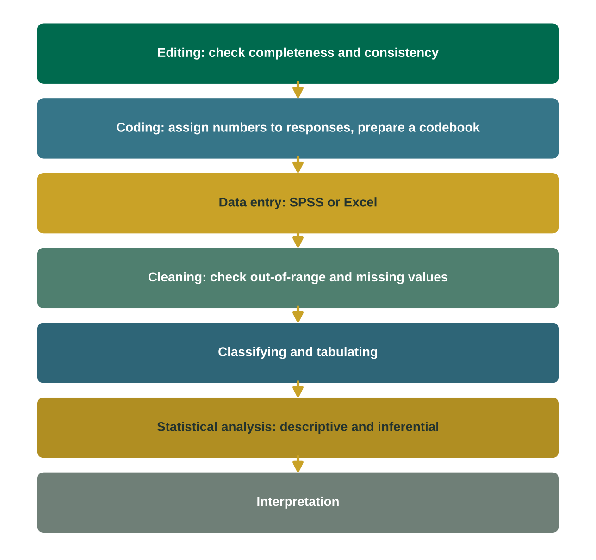
Figure 15. Steps in processing and analysing quantitative data
| Step | What is done | Example |
|---|---|---|
| Editing | Examine completed instruments for errors, omissions and inconsistencies; field editing and central editing | Discard a questionnaire with half the items blank |
| Coding | Assign numerical codes to responses; prepare a codebook listing variables, codes and missing values | Male = 1, Female = 2; Strongly agree = 5 … Strongly disagree = 1; reverse-code negative items |
| Classifying | Arrange data into groups or classes by common characteristics: qualitative (attributes) or quantitative (class intervals) | Marks grouped 0–39, 40–59, 60–79, 80–100 |
| Tabulating | Present classified data in rows and columns: simple (one-way) or complex (two-way, cross-tabulation) tables | Cross-table of gender by pass/fail |
| Analysis | Descriptive statistics (frequency, percentage, mean, SD) and inferential statistics (t-test, ANOVA, correlation, chi-square, regression) | See PC 126 |
Parts of a statistical table
Table number, title, caption (column headings), stub (row headings), body, head note (units) and source note.
7.3 Qualitative data analysis: thematic analysis
Qualitative analysis is inductive, iterative and simultaneous with data collection. Creswell (2012) describes it as moving from raw data → organising and transcribing → reading for a general sense → coding → themes and descriptions → interrelating themes → interpreting meaning.
Thematic analysis (Braun & Clarke, 2006) is a method for identifying, analysing and reporting patterns (themes) within data. Its six phases:
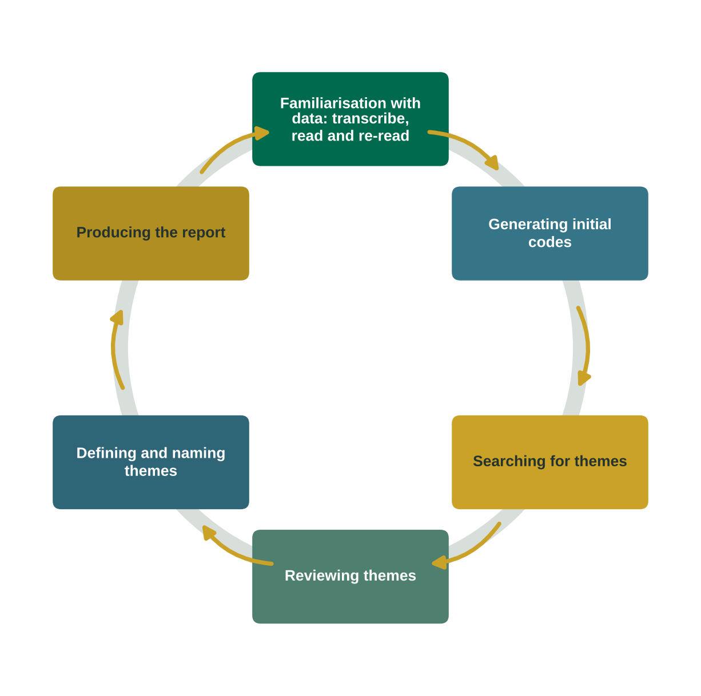
Figure 16. Braun and Clarke's (2006) six phases of thematic analysis
Code: a label attached to a segment of text that captures its meaning (e.g., "lack of materials").
Theme: a broader pattern of meaning that unifies several codes (e.g., "Resource constraints in inclusive classrooms").
Coding can be inductive (from the data) or deductive (from theory); semantic (explicit meaning) or latent (underlying ideas).
Software: NVivo, ATLAS.ti, MAXQDA, or manual colour coding.
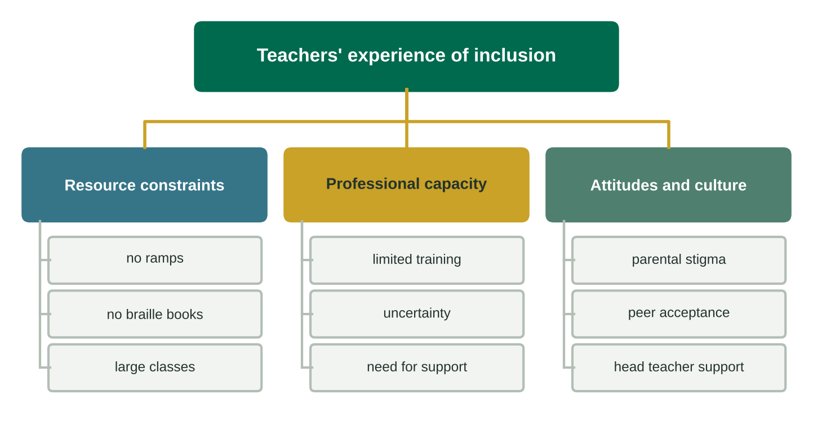
Figure 17. From codes to themes: an example of thematic analysis
7.4 Interpretation of data
Interpretation explains what the findings mean in relation to the research questions, theory and previous studies. A good interpretation:
summarises the major findings;
compares them with the literature (consistent or inconsistent);
offers explanations, including alternative explanations;
states the limitations of the study;
draws implications for practice, policy and future research;
avoids over-generalization (do not claim causation from correlational data; do not generalise qualitative findings to populations).
Likely questions: "Describe the steps of processing quantitative data." "What is coding? Prepare a codebook for a short questionnaire." "Explain the phases of thematic analysis." "What precautions should be taken while interpreting data?"
Unit 8: Referencing and Bibliography
8.1 Meaning and importance of referencing
Referencing acknowledges the sources of ideas, words, data and images used in academic work. It:
gives credit to original authors (intellectual honesty);
allows readers to locate and verify sources;
shows the breadth and depth of the writer's reading;
supports the writer's arguments with evidence;
protects the writer from plagiarism.
| Term | Meaning |
|---|---|
| In-text citation | Brief reference within the text (author, year) |
| Reference list | Full details of only those sources cited in the text, alphabetical (APA) |
| Bibliography | All sources consulted, whether cited or not |
| Footnote / endnote | Notes at the foot of the page or end of the chapter (Chicago, MLA notes style) |
8.2 Ways of using others' work
| Technique | What it is | Citation rule |
|---|---|---|
| Quoting | Exact words of the source in quotation marks | Author, year and page number: (Dewey, 1916, p. 76). Quotations of 40 words or more appear as an indented block without quotation marks (APA) |
| Paraphrasing | Restating a specific passage in your own words and structure, of similar length | Author and year (page recommended) |
| Summarising | Condensing the main ideas of a larger work into a shorter version in your own words | Author and year |
A paraphrase must change both the words and the sentence structure; changing a few words ("patchwriting") while keeping the original structure is still plagiarism.
8.3 Plagiarism
Plagiarism is presenting someone else's words, ideas, data or work as one's own without acknowledgement (APA, 2020). It is a serious breach of academic integrity and can lead to failing grades, cancellation of degrees, retraction of articles and loss of employment.
Forms: copying verbatim without quotation and citation; paraphrasing without citation; patchwriting; copying another student's work; buying or outsourcing assignments ("contract cheating"); self-plagiarism (reusing one's own published work without citation); fabricating references; submitting AI-generated text as one's own where not permitted.
Avoiding plagiarism: take careful notes with sources; quote and cite properly; paraphrase genuinely; keep a reference manager; use similarity-checking software (e.g., Turnitin, iThenticate) for self-checking; follow institutional policies.
The University Grants Commission (UGC) of Bangladesh has introduced plagiarism-checking support for universities, and several universities have adopted anti-plagiarism policies for theses and promotion. Check your own university's current policy.
8.4 Style manuals for academic writing
| Style | Discipline | In-text form |
|---|---|---|
| APA (7th ed., 2020) | Education, psychology, social sciences | Author–date: (Creswell, 2012) |
| MLA (9th ed.) | Languages and literature | Author–page: (Creswell 45) |
| Chicago (17th ed.) | History, humanities | Notes–bibliography or author–date |
| Harvard | Many disciplines | Author–date (variant) |
| IEEE / Vancouver | Engineering / medicine | Numbered [1] |
APA 7th edition essentials
In-text citations:
One author: (Freire, 1970) or Freire (1970) argued…
Two authors: (Fraenkel & Wallen, 2009) — use "and" in narrative citations.
Three or more authors: (Gay et al., 2012) from the first citation.
Group author: (UNESCO, 2020); (Bangladesh Bureau of Educational Information and Statistics [BANBEIS], 2023) then (BANBEIS, 2023).
Direct quotation: (Bloom, 1956, p. 18).
Secondary source: (Piaget, 1952, as cited in Woolfolk, 2019).
Reference list formats:
| Source | APA 7 format |
|---|---|
| Book | Creswell, J. W. (2012). Educational research: Planning, conducting, and evaluating quantitative and qualitative research (4th ed.). Pearson. |
| Edited book chapter | Author, A. (Year). Title of chapter. In E. Editor (Ed.), Title of book (pp. xx–xx). Publisher. |
| Journal article | Braun, V., & Clarke, V. (2006). Using thematic analysis in psychology. Qualitative Research in Psychology, 3(2), 77–101. https://doi.org/10.1191/1478088706qp063oa |
| Report | UNESCO. (2020). Global education monitoring report 2020: Inclusion and education. UNESCO. |
| Government document | Ministry of Education. (2010). National education policy 2010. Government of the People's Republic of Bangladesh. |
| Newspaper | Author, A. (Year, Month Day). Title of article. Newspaper Name. URL |
| Webpage | Organisation. (Year, Month Day). Title of page. Site Name. URL |
| Thesis | Author, A. (Year). Title [Master's thesis, University]. Database or URL |
| Personal communication | Cited only in text: (S. Rahman, personal communication, March 5, 2025); not in the reference list |
Reference list rules: alphabetical by first author's surname; hanging indent of 0.5 inch; double spacing; sentence case for titles of books and articles; title case and italics for journal names; italics for volume number; include DOI as a URL where available.
8.5 Sources for referencing
Libraries: books, theses, encyclopaedias, print journals (e.g., IER and Central Library, University of Dhaka; NAEM library).
Reports: BANBEIS, DPE, DSHE, NAEM, UNESCO GEM Reports, UNICEF, World Bank, CAMPE Education Watch.
Journals and databases: ERIC, JSTOR, Scopus, Web of Science, Google Scholar, BanglaJOL, Teacher's World (IER).
Newspapers and magazines: for current events (use with caution).
Personal communications: interviews, emails, lectures (cited in text only).
Internet: evaluate with the CRAAP test: Currency, Relevance, Authority, Accuracy, Purpose.
8.6 Taking notes: suggested methods
| Method | Description |
|---|---|
| Cornell method (Pauk) | Page divided into cue column, notes column and summary section |
| Outline method | Hierarchical headings and sub-points |
| Mapping / mind mapping (Buzan) | Visual diagram of main idea and branches |
| Charting / matrix (synthesis matrix) | Table with sources as rows and themes as columns: ideal for literature reviews |
| Index cards / annotated bibliography | One card per source: full reference, key points, quotations with page numbers, own comments |
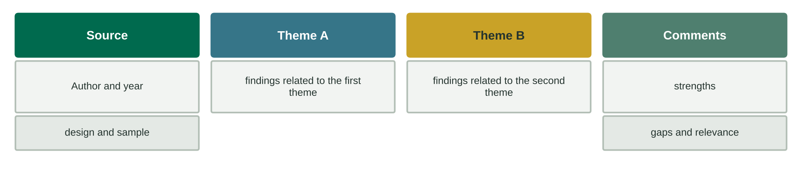
Figure 18. A synthesis matrix for a literature review
8.7 Use of EndNote and other reference managers
Reference management software stores references, inserts citations and formats reference lists automatically in the chosen style.
EndNote (Clarivate; commercial): create a library → import references from databases (RIS files) or Google Scholar → attach PDFs → use Cite While You Write in MS Word to insert citations → choose output style (APA 7th) → bibliography is generated automatically.
Free alternatives: Zotero, Mendeley, and Microsoft Word's built-in References tool.
Likely questions: "What is plagiarism? How can it be avoided?" "Distinguish between quoting, paraphrasing and summarising." "Write APA references for a book, a journal article and a report." "Differentiate between reference and bibliography."
Unit 9: Writing a Research Proposal
9.1 Meaning and importance
A research proposal is a written plan that describes what the researcher intends to study, why it is important and how it will be carried out. It is "a plan for a study" submitted for approval or funding (Creswell, 2012).
Importance: it clarifies the researcher's thinking; serves as a contract between student and supervisor or funder; is required for ethical approval; allows evaluation of feasibility; guides the conduct of the study; and saves time by anticipating problems.
9.2 Components of a research proposal
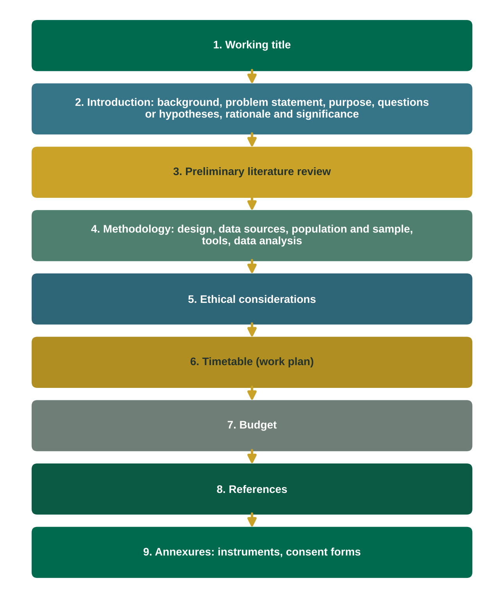
Figure 19. Components of a research proposal
| Component | Content and guidance |
|---|---|
| 1. Working title | Concise (about 12–15 words); names the main variables or phenomenon, participants and setting. Example: Effect of Cooperative Learning on Mathematics Achievement of Grade Seven Students in Gazipur |
| 2. Introduction / background | Context of the study → statement of the problem (topic, problem, justification, deficiencies, audiences) → purpose → research questions, objectives or hypotheses → rationale and significance (who benefits) → definitions of key terms → scope and delimitations |
| 3. Literature review (preliminary) | Thematic review of key studies and theories; theoretical or conceptual framework; identification of the gap |
| 4. Methodology | Research approach and design and its justification; population, sample size and sampling technique; tools and their validation; data collection procedures; data analysis methods; validity, reliability or trustworthiness |
| 5. Ethical considerations | Consent and assent, confidentiality, voluntary participation, permissions, data protection |
| 6. Timetable | Work plan, often as a Gantt chart: literature review, tool development, pilot, data collection, analysis, writing |
| 7. Budget | Itemised costs: travel, printing, honoraria for data collectors, transcription, software, contingencies |
| 8. References | All sources cited, in APA style |
| 9. Annexures | Questionnaires, interview guides, observation checklists, consent forms, permission letters |
Sample Gantt chart for a six-month study
| Activity | M1 | M2 | M3 | M4 | M5 | M6 |
|---|---|---|---|---|---|---|
| Literature review | ✓ | ✓ | ||||
| Tool development and pilot | ✓ | ✓ | ||||
| Data collection | ✓ | ✓ | ||||
| Data analysis | ✓ | ✓ | ||||
| Report writing | ✓ | ✓ |
9.3 Matching proposal components to the research approach
| Component | Quantitative proposal | Qualitative proposal | Mixed methods proposal |
|---|---|---|---|
| Title | Names variables (IV, DV) | Names the central phenomenon | Signals both strands |
| Purpose | Test, relate or compare variables | Explore or understand a central phenomenon | States the intent to combine and why |
| Questions | Descriptive, comparison, relationship questions; hypotheses | One central question and sub-questions | Quantitative, qualitative and a mixed methods (integration) question |
| Literature | Extensive at the start; theory to be tested | Lighter at the start; may follow analysis | Both |
| Design | Survey, experimental, correlational | Case study, ethnography, phenomenology, grounded theory, narrative | Convergent, explanatory or exploratory sequential, embedded |
| Sample | Large, random | Small, purposeful | Both, with an explanation of how they relate |
| Tools | Instruments with closed items; validity and reliability | Interview and observation protocols; trustworthiness | Both, plus integration procedures |
| Analysis | Descriptive and inferential statistics | Coding and thematic analysis | Separate analyses plus integration (joint display) |
| Role of researcher | Objective, detached | Reflexive; positionality stated | Both |
9.4 Common weaknesses in proposals
A problem that is too broad, vague or not researchable.
Research questions that do not match the purpose or the design.
A literature review that lists studies without synthesis.
Design, sample and tools not justified.
No pilot testing or validation of tools.
Unrealistic timetable or budget.
Ethical issues ignored.
Inconsistent or incorrect referencing.
For an exam or viva, practise writing a one-page proposal outline within 20 minutes: title, problem, purpose, three research questions, design, sample, tools, analysis and ethics. Alignment among these elements is what examiners look for.
Likely questions: "What is a research proposal? Describe its components." "Prepare a research proposal on a topic of your choice." "How do quantitative, qualitative and mixed methods proposals differ?"
Exam Preparation Bank
A. Multiple-choice questions
1. "Research is a process of steps used to collect and analyze information to increase our understanding of a topic or issue." This definition is given by:
(a) Creswell (b) Kerlinger (c) Best (d) Kothari
Show answer
Answer: (a)
2. Reasoning from a general premise to a specific conclusion is called:
(a) induction (b) deduction (c) abduction (d) intuition
Show answer
Answer: (b)
3. The originator of the inductive method in science is usually considered to be:
(a) Aristotle (b) Francis Bacon (c) John Dewey (d) Charles Darwin
Show answer
Answer: (b)
4. "How We Think", which describes the steps of reflective thinking, was written by:
(a) Dewey (b) Bacon (c) Lewin (d) Corey
Show answer
Answer: (a)
5. A study that examines whether SSC results predict HSC results uses which design?
(a) experimental (b) correlational (prediction) (c) ethnographic (d) historical
Show answer
Answer: (b)
6. In experimental research the variable manipulated by the researcher is the:
(a) dependent variable (b) independent variable (c) control variable (d) extraneous variable
Show answer
Answer: (b)
7. Random assignment of participants to groups is a feature of:
(a) quasi-experimental design (b) true experimental design (c) causal-comparative design (d) survey design
Show answer
Answer: (b)
8. Comparing reading scores of children who did and did not attend pre-primary school is:
(a) experimental (b) causal-comparative (c) action research (d) phenomenology
Show answer
Answer: (b)
9. The "essence of a lived experience" is the focus of:
(a) grounded theory (b) phenomenology (c) ethnography (d) survey
Show answer
Answer: (b)
10. Grounded theory was developed by:
(a) Glaser and Strauss (b) Lincoln and Guba (c) Campbell and Stanley (d) Braun and Clarke
Show answer
Answer: (a)
11. External criticism in historical research establishes:
(a) accuracy (b) authenticity (c) reliability of a test (d) sample size
Show answer
Answer: (b)
12. Who coined the term "action research"?
(a) Kurt Lewin (b) Stephen Corey (c) Stephen Kemmis (d) John Dewey
Show answer
Answer: (a)
13. QUAN → qual denotes which mixed methods design?
(a) convergent (b) explanatory sequential (c) exploratory sequential (d) embedded
Show answer
Answer: (b)
14. A variable that changes the strength of the relationship between the IV and DV is a:
(a) mediating variable (b) moderating variable (c) dependent variable (d) control variable
Show answer
Answer: (b)
15. "There is no significant difference between the means of two groups" is a:
(a) directional hypothesis (b) null hypothesis (c) research question (d) purpose statement
Show answer
Answer: (b)
16. Qualitative research questions should avoid words such as:
(a) explore (b) describe (c) affect (d) understand
Show answer
Answer: (c)
17. Selecting every 10th student from a list after a random start is:
(a) stratified sampling (b) systematic sampling (c) cluster sampling (d) quota sampling
Show answer
Answer: (b)
18. Sampling whole schools rather than individual students is:
(a) cluster sampling (b) snowball sampling (c) systematic sampling (d) convenience sampling
Show answer
Answer: (a)
19. Snowball sampling is most useful for:
(a) large national surveys (b) hard-to-reach populations (c) experiments (d) historical research
Show answer
Answer: (b)
20. According to Krejcie and Morgan (1970), the sample for a population of 1,000 is about:
(a) 100 (b) 278 (c) 384 (d) 500
Show answer
Answer: (b)
21. In qualitative research, sample size is usually guided by:
(a) power analysis (b) saturation (c) Yamane's formula (d) random tables
Show answer
Answer: (b)
22. "Do you find your teacher kind and competent?" is an example of a:
(a) leading question (b) double-barrelled question (c) open question (d) Likert item
Show answer
Answer: (b)
23. The Likert scale was developed by:
(a) Rensis Likert (b) Charles Osgood (c) Ned Flanders (d) Lee Cronbach
Show answer
Answer: (a)
24. A focus group typically has:
(a) 1–2 participants (b) 6–10 participants (c) 30–40 participants (d) over 100 participants
Show answer
Answer: (b)
25. The Belmont Report (1979) set out three principles: respect for persons, beneficence and:
(a) justice (b) anonymity (c) validity (d) reliability
Show answer
Answer: (a)
26. Assigning numbers to responses for analysis is called:
(a) editing (b) coding (c) tabulating (d) interpreting
Show answer
Answer: (b)
27. The six phases of thematic analysis were proposed by:
(a) Braun and Clarke (b) Miles and Huberman (c) Strauss and Corbin (d) Lincoln and Guba
Show answer
Answer: (a)
28. In APA 7th edition, a work by three or more authors is cited from the first time as:
(a) all authors listed (b) first author et al. (c) first two authors et al. (d) numbered citation
Show answer
Answer: (b)
29. A list of all sources consulted, whether cited or not, is a:
(a) reference list (b) bibliography (c) footnote (d) abstract
Show answer
Answer: (b)
30. "Cite While You Write" is a feature of:
(a) SPSS (b) EndNote (c) NVivo (d) Excel
Show answer
Answer: (b)
B. Short questions
Q1. Define educational research. Write any five of its characteristics.
Q2. Distinguish between basic research and action research.
Q3. Differentiate between inductive and deductive reasoning with an example of each.
Q4. What is a research design?
Q5. Mention four threats to internal validity in experimental research.
Q6. Differentiate between correlational and causal-comparative research.
Q7. What is triangulation in qualitative research?
Q8. Distinguish between a topic, a research problem and a research question.
Q9. What is an operational definition? Give an example.
Q10. Write a null hypothesis and a directional hypothesis for the same study.
Q11. Distinguish between a population and a sampling frame.
Q12. What is the difference between stratified and quota sampling?
Q13. What is maximal variation sampling?
Q14. Write three rules for wording questionnaire items.
Q15. What is a codebook?
Q16. Define plagiarism. Mention three of its forms.
Q17. Distinguish between paraphrasing and summarising.
Q18. What is a Gantt chart? Why is it included in a proposal?
C. Broad questions
Q19. Define research. Explain the steps in the process of educational research and the role of the literature review in each step.
Q20. Classify educational research designs. Compare quantitative and qualitative research with examples.
Q21. Describe the major experimental designs using Campbell and Stanley's notation. Which threats to validity does each control?
Q22. Discuss the characteristics, types and steps of action research. Show how a classroom teacher can use it.
Q23. What is mixed methods research? Explain its major designs and the situations in which each is suitable.
Q24. What is a research problem? Discuss its sources and the criteria for selecting a good problem. How should a problem be justified?
Q25. Explain the different types of variables and write a purpose statement, research questions and hypotheses for a quantitative study.
Q26. Describe probability and non-probability sampling techniques. How would you determine sample size for a survey of secondary teachers?
Q27. Compare questionnaire, interview, FGD and observation as tools of data collection. Discuss the ethical issues involved in data collection.
Q28. Describe the steps of processing quantitative data and the phases of thematic analysis of qualitative data.
Q29. What is plagiarism? Explain how proper referencing in APA style helps avoid it.
Q30. Describe the components of a research proposal. Prepare a proposal outline on "Factors affecting secondary school dropout in Bangladesh".
References
American Psychological Association. (2020). Publication manual of the American Psychological Association (7th ed.). APA.
Best, J. W., & Kahn, J. V. (2006). Research in education (10th ed.). Pearson.
Booth, W. C., Colomb, G. G., & Williams, J. M. (2008). The craft of research (3rd ed.). University of Chicago Press.
Braun, V., & Clarke, V. (2006). Using thematic analysis in psychology. Qualitative Research in Psychology, 3(2), 77–101.
Campbell, D. T., & Stanley, J. C. (1963). Experimental and quasi-experimental designs for research. Rand McNally.
Clandinin, D. J., & Connelly, F. M. (2000). Narrative inquiry: Experience and story in qualitative research. Jossey-Bass.
Cohen, L., Manion, L., & Morrison, K. (2018). Research methods in education (8th ed.). Routledge.
Creswell, J. W. (2012). Educational research: Planning, conducting, and evaluating quantitative and qualitative research (4th ed.). Pearson.
Creswell, J. W., & Creswell, J. D. (2018). Research design: Qualitative, quantitative, and mixed methods approaches (5th ed.). Sage.
Creswell, J. W., & Plano Clark, V. L. (2018). Designing and conducting mixed methods research (3rd ed.). Sage.
Creswell, J. W., & Poth, C. N. (2018). Qualitative inquiry and research design: Choosing among five approaches (4th ed.). Sage.
Dewey, J. (1910). How we think. D. C. Heath.
Evans, D. R., & Rossman, G. B. (2009). Using the work and words of other authors: A short guide to referencing. Center for International Education, University of Massachusetts Amherst.
Fraenkel, J. R., & Wallen, N. E. (2009). How to design and evaluate research in education (7th ed.). McGraw-Hill.
Gay, L. R., Mills, G. E., & Airasian, P. (2012). Educational research: Competencies for analysis and applications (10th ed.). Pearson.
Glaser, B. G., & Strauss, A. L. (1967). The discovery of grounded theory. Aldine.
Johnson, B., & Christensen, L. (2014). Educational research: Quantitative, qualitative, and mixed approaches (5th ed.). Sage.
Kemmis, S., & McTaggart, R. (Eds.). (1988). The action research planner (3rd ed.). Deakin University Press.
Kerlinger, F. N. (1986). Foundations of behavioral research (3rd ed.). Holt, Rinehart & Winston.
Kothari, C. R. (2004). Research methodology: Methods and techniques (2nd ed.). New Age International.
Krejcie, R. V., & Morgan, D. W. (1970). Determining sample size for research activities. Educational and Psychological Measurement, 30(3), 607–610.
Krueger, R. A., & Casey, M. A. (2015). Focus groups: A practical guide for applied research (5th ed.). Sage.
Lewin, K. (1946). Action research and minority problems. Journal of Social Issues, 2(4), 34–46.
Lincoln, Y. S., & Guba, E. G. (1985). Naturalistic inquiry. Sage.
Lodico, M. G., Spaulding, D. T., & Voegtle, K. H. (2006). Methods in educational research: From theory to practice. Jossey-Bass.
Lunenburg, F. C., & Irby, B. J. (2008). Writing a successful thesis or dissertation. Corwin Press.
Mills, G. E. (2011). Action research: A guide for the teacher researcher (4th ed.). Pearson.
Patton, M. Q. (2015). Qualitative research and evaluation methods (4th ed.). Sage.
Rossman, G. B., & Rallis, S. F. (2016). An introduction to qualitative research: Learning in the field (4th ed.). Sage.
Stake, R. E. (1995). The art of case study research. Sage.
Yin, R. K. (2018). Case study research and applications: Design and methods (6th ed.). Sage.